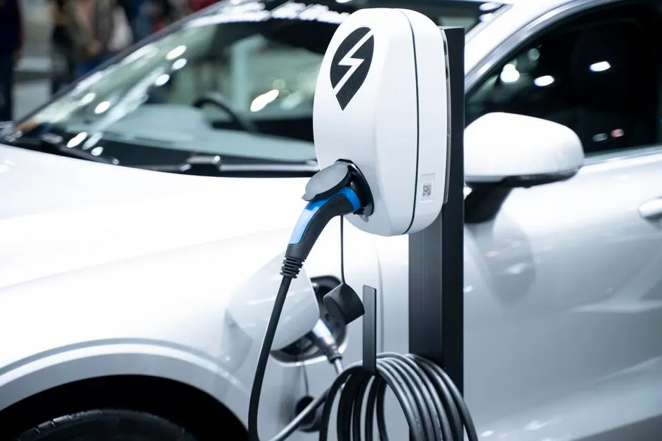

Beyond EVs: Understanding The Smart E-Mobility Shift
By Deepak Garg
In a world where innovations have become commonplace, each day we are wowed by
the great progress we are making as a society.
There is another colossal change brewing, and it is occurring right at the intersection of energy and mobility—e-mobility. And the question arises: How can we seize the extraordinary potential of e-mobility to shape a sustainable tomorrow?
With more than two decades of experience in the energy sector, collaborating with esteemed industry and government leaders, I've encountered exciting opportunities and witnessed remarkable advancements in the energy landscape. However, amidst this dynamic milieu, e-mobility stands out. I am thrilled by the unprecedented opportunity it presents to drive a global shift towards energy transition and sustainability. Beyond conventional electric vehicles (EVs), e-mobility represents an extraordinary fusion of renewable energy, cutting-edge technologies and interconnected transportation.
As we stand at the brink of a transformative era of sustainable energy, what motivates me is how we can take e-mobility to smart e-mobility—that is, at exponential maturity and intelligence.
The concept encompasses not only electric vehicles but also technology and innovation to drive widespread EV adoption and prepare people, stakeholders, the grid and more. Embracing this comprehensive approach empowers us to not only reduce carbon footprints but also build a brighter, greener future for generations to come.
It's all about smart synergies.
The shift to smart e-mobility is not a solitary endeavor; it's a holistic ecosystem play, uniting diverse stakeholders within a cohesive framework. At its core lies orchestrated platforms, solutions and services working in tandem to drive sustainable energy and transportation.
Within this ecosystem, many stakeholders converge, each playing a vital role in shaping the EV future.
• Utilities form a crucial pillar, integrating electric vehicles into the energy infrastructure, partnering with people and driving awareness, and preparing for a grand-scale charging ecosystem setup.
• Energy retailers act as catalysts, inspiring widespread EV adoption through innovative pricing models and incentives.
• Cities and municipalities emerge as enablers, crafting supportive frameworks with charging infrastructure and rebate programs.
• Fleet operators embrace e-mobility to optimize operations, cut costs and reduce their environmental impact.
• Property managers recognize the value of e-mobility, integrating EV charging into residential and commercial spaces and making e-mobility accessible to all.
• Charge point operators (CPOs) are critical in establishing and managing charging networks, ensuring seamless experiences for EV users across various locations.
• Commercial and industrial enterprises actively adopt e-mobility, incorporating electric vehicles as a mobility solution for their fleets and streamlining EV ownership for their employees.
10 Mandates For A Robust E-Mobility Ecosystem
I want to share 10 essential mandates that I’ve found to be evident in establishing a robust smart e-mobility ecosystem:
1. Creating A Collaborative Ecosystem
Building a solid foundation begins by bringing key stakeholders together, working in synergy toward advancing e-mobility.
2. Empowering EV Charging Infrastructure And Smart Grid
Widespread electric vehicle adoption relies on accessible charging infrastructure. Investing in a well-distributed network of charging stations integrated with a smart grid ensures seamless charging and optimal energy management, enhancing user experience.
3. Driving Education And Awareness
Empowering customers through knowledge and awareness is essential. Through educational campaigns and personalized information, individuals can be further enlightened about the environmental and economic benefits of electric vehicles.
4. Incentivizing Businesses To Lead the Charge
Leading by example is a powerful catalyst for change. By incentivizing businesses to incorporate electric vehicles into their fleets and introduce charging facilities, a ripple effect is fostered that drives mass adoption and reduces carbon footprints across industries.
5. Pioneering Technology And Innovation
Embracing innovations like intelligent charging solutions and vehicle-to-grid (V2G) integration can allow the delivery of an unparalleled customer experience. Industry leaders should be committed to staying at the forefront of technological advancements in e-mobility.
6. Greening The Grid With Renewable Energy
Reducing overall environmental impact is crucial. Integrating renewable energy sources, such as solar and wind to power electric vehicles makes each charge eco-friendly and a significant step towards a greener world for future generations.
7. Engaging With Energy Regulators
Active collaboration with energy regulators and policymakers is necessary to navigate the evolving landscape. Advocating for favorable policies and streamlined permitting processes paves the way for an ecosystem fostering growth and innovation.
8. Fortifying Data Security And Privacy
Data security is paramount in our digital age. Ensuring users' data is protected with the utmost care and adhering to strict privacy standards builds trust and confidence in this ecosystem.
9. Investing In Research And Development
Progress comes from continuous innovation. Investing in research and development can allow companies to explore new battery technologies, charging efficiency and smart mobility solutions and continually enhancing e-mobility offerings.
10. Promoting Interoperability And Standardization
Embracing openness and standardization is vital. Encourage interoperability among EV charging networks and integrated platforms to deliver a seamless experience for users, regardless of their location or charging preferences.
The Technology Play
So, where does technology fit into creating a robust e-mobility ecosystem? The answer is: everywhere! Integrated platforms leverage emerging technologies, enabling key stakeholders to work cohesively toward a shared vision.
Advanced EV charging infrastructure and smart grid solutions can help ensure seamless and efficient charging experiences, optimizing energy consumption. Utilizing advanced analytics and personalized information campaigns, technology educates and empowers individuals to embrace electric vehicles and clean energy.
Furthermore, V2G integration can enhance the ecosystem's resilience, transforming electric vehicles into valuable energy assets. Data security measures bolster user trust, while standardized protocols promote seamless interoperability among charging networks, ensuring hassle-free EV ownership.
With collaborative efforts, cutting-edge technologies and a shared determination for a smarter tomorrow, it is critical to understand the evolution of e-mobility as it will undoubtedly play a transformative role in forging a sustainable world for generations to come.
Forbes Technology Council is an invitation-only community for world-class CIOs, CTOs and technology executives. Do I qualify?